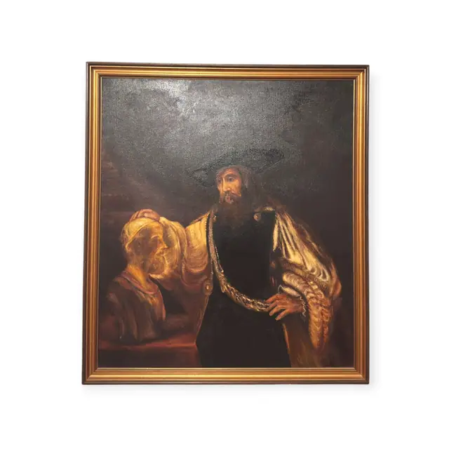
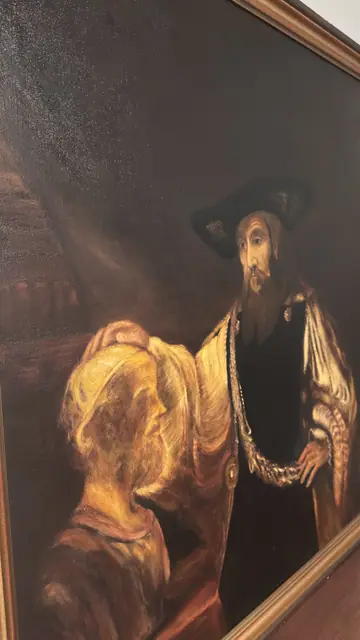
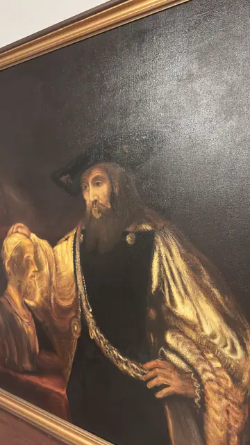

Paintings & Prints
Scholar with a Bust Old Master Copy, Framed
· 20th century copy after a 17th century composition
Price Upon Request



About the Item
A large dark-ground half-length: a bearded man in a broad black hat and black doublet stands at the right, one hand on his hip and the other laid on the head of a pale gold portrait bust of an older bearded man at the left. His billowing sleeves are painted in thick creamy gold-white impasto and a heavy chain loops across his chest, catching the light. Everything else - the background wall, a suggestion of a table and shelved books at the left - sinks into warm blacks and umbers, with the light falling from the upper left in true chiaroscuro. The composition closely follows Rembrandt's 'Aristotle with a Bust of Homer'. Medium: oil on canvas. Condition: Coarse canvas weave shows plainly through the thin dark passages, which is normal for the technique. Surface glare in the photographs makes fine condition hard to judge; no tears, punctures or flaking are visible.
Details
- Creation Year:
- 20th century copy after a 17th century composition
- Dimensions:
- Height: 45.5 in (115.57 cm)
Width: 40.75 in (103.5 cm)
outside of frame - Medium:
- oil on canvas
- Period:
- 20Th
- Condition:
- Offered in the condition shown in the photographs.
- Reference Number:
- VO-94
- Documentation:
- no certificate photographed